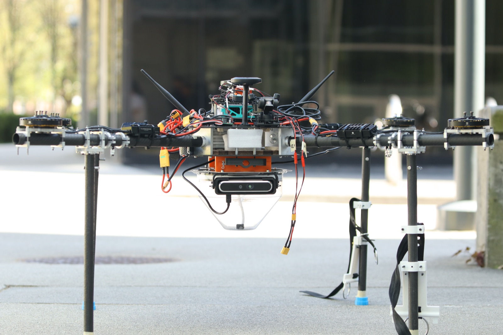

Third Year Business and Computer Science Student @ University of British Columbia
vayer2005@gmail.com / vayer@student.ubc.ca
I am currently pursuing a Bachelors degree in Business and Computer Science at the University of British Columbia. I ranked 6th in my faculty at UBC on GPA. I am passionate about distributed systems, low level systems, competitive programming, cryptocurrency, and fraud detection algorithms.
